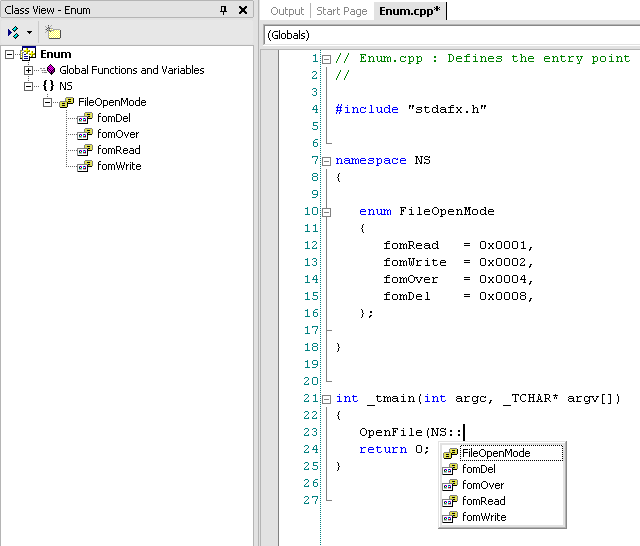

# Mademoiselle Chambon
Caloni, 2010-05-14 <cinema> <movies> [up] [copy]Mademoiselle Chambon é daqueles filmes um tanto naturalistas, em que você precisa prestar atenção, mas não muita, para perceber a relação sutil entre os personagens, e os acontecimentos poderiam ter sido narrados de eventos da vida real e não soariam fantásticos. A bem da verdade, o núcleo narrativo do filme de Stéphane Brizé com certeza já deve ter acontecido na realidade uma série de vezes. A virtude do filme é conseguir representar isso sem escandalizar em demasiado, se focando nos personagens.
Dito isto, é preciso ressaltar que a sexualidade do filme está bem escondida, mas é isso o que a mantém permanentemente presente, no ar. É como se quanto mais se escondesse o óbvio, mais ele insistisse em povoar nossas mentes, imaginando situações que circundam as conversas aparentemente despretensiosas e inocentes da professora de piano e do pai de um de seus alunos. Porém, ao entrar em cena elementos desses personagens -- como a falta de instrução do pai -- e detalhes sutis -- como um toque insistente em um CD -- fazem com que o desenrolar da história desencadeie não apenas no óbvio, mas um óbvio potencializado exatamente pelo que vimos durante todo o filme.
# 2 Dias em Paris
Caloni, 2010-05-16 <cinema> <movies> [up] [copy]Estreia de Julie Delpy (atriz de Antes do Amanhecer) na direção de longas-metragens, o filme já diz a que vem através do seu título. Ambientada na cidade-luz, essa comédia de costumes, obviamente, é mais focada em seus personagens. Jack (Adam Goldberg), um hipocondríaco cheio de manias que vai descobrindo a namorada de dois anos em dois dias em Paris e o reencontro dela com seus ex-amantes. Marion (Delpy), a narradora em off (supostamente onisciente) da história, fica mais à vontade em torno da família e de seus amigos. Traz uma narrativa e fotografia leves, com movimentos próximos, embora sem enquadramentos muitas vezes adequados (note como nas conversas com seus amigos seu namorado nunca é focado, mas fica ao fundo, com sua expressão de incredulidade). Por fim, muitas das situações criadas não servem tanto aos seus propósitos quanto se pensaria (o fato de talvez a mãe ter sido muito "liberal" com respeito a sexo adolescente e o pai ter sua exposição toda baseada em sexo não é tão absurdo assim em uma cidade como Paris).
Apenas quem nunca tenha visto qualquer filme francês achará diversos fatos como realmente atípicos. Discussões políticas ou sobre temas polêmicos (como racismo) parecem ter a única função de dar um ar de intelectualidade em toda aquela gente pelo simples estereótipo. Ora, pelo fato de estarmos em Paris, não há muita estranheza sobre os costumes dos próprios habitantes, e a coisa mais engraçada é perceber a estranheza dele frente a isso (e o fato dele ser hipocondríaco talvez tenha sido para arrancar mais risadas, mas não há muito disso no resto do filme).
# Analogicamente perfeito
Caloni, 2010-05-19 <computer> [up] [copy]É possível explicar tudo no mundo da informática através de analogias? Pela minha singela experiência de professor informal, eu acredito que sim. Durante esses dois anos, explanei diversos assuntos e, em todos eles, difíceis ou não, consegui um certo grau de sucesso graças ao uso de metáforas e parábolas.
De memória (ou buscando no meu blogue) consigo lembrar alguns tópicos e a forma como os expliquei. Em alguns até fiz um artigo sobre o assunto:
Acredito ser essa a melhor forma de desmistificar esse pequeno mundinho que parece incompreensível aos outros mortais. Até porque tudo que é criado no mundo dos computadores são abstrações do mundo real, que por sua vez são abstrações da mente humana.
É por isso que sempre digo que ciência da computação é uma arte-ciência da área de humanas.
# Fúria de Titãs
Caloni, 2010-05-21 <cinema> <movies> [up] [copy]Fúria de Titãs busca ser uma superprodução sobre deuses e humanos, mas falha miseravelmente em sua abordagem 3D, especialmente em suas transições, onde um bebê no barco parece distorcido ou a aparência de Hades quando este aparece entre os humanos.
Com uma introdução um tanto rápida do protagonista, talvez deixando pouco espaço para criação da empatia ou até da criação desse personagem, logo parte-se para as lutas, mas que quase nunca emplacam, tendo como muleta a sua forçada trilha sonora que não conta muito com criatividade. Mesmo nas sequências onde o remake deveria se sair melhor que o original datado, como a luta com o escorpião gigante, temos uma descompasso entre as cenas próximas de suas garras (rápido) e as cenas em que os personagens sobem em cima dele (lento), mesmo que esse ritmo se encaixe com a trilha sonora (que tem um raro bom momento). Outra falha notável é o fato do cenário ser 3D, mas o escorpião parecer em muitas ocasiões "fora" do quadro, como um efeito de projeção no fundo do cenário. Lembrou um Duna 3D (se esta tivesse sido feita com o uso da tecnologia). E, por fim, não há tensão, mesmo se tratando de uma luta mortal com um escorpião gigante, o que é um problema mais grave ainda, pois é disso que a aventura depende para engrenar. Como prêmio de consolação, o efeito visual das bruxas, do barqueiro e da Medusa são muito bem conduzidos, assim como as cenas de ação relacionadas com esses personagens.
Já a história possui alguns buracos ou detalhes que não fazem muito sentido, como os "homens-escorpião" ajudarem os humanos a combater os deuses mesmo que estes odeiem os humanos. Há uma parábola e simbolismo entre Perseus e Jesus: filho de deus supremo (Deus x Zeus), e pescador, tem que se sacrificar para salvar os humanos. A fala final de Zeus demonstra também isso, pois ele diz que não gostaria de sacrificar um filho pela humanidade. Temos também a figura dual entre deus e demônio representado por Zeus e Hades, pois os outros deuses no filme são menos coadjuvantes e mais enfeites de cenário. Por outro lado o filme encarna seres humanos tolos, levados pelo destino que é conduzido pelos deuses.
Por fim, a mania hollywoodiana de sempre mostrar tudo ao espectador, até a simples simbologia de morte de sua seguidora, enfraquece todo o mistério em torno de Olimpo. Curioso é que mesmo tendo tanto apelo visual por causa dos efeitos, carece de diálogos para explicar coisas óbvias, como quando um dos bichos voadores pega a bolsa com a cabeça da Medusa. Um trabalho ainda em desenvolvimento lançado aos gritos de 3D. Não funciona.
# Quincas Berro d'Água
Caloni, 2010-05-21 <cinema> <movies> [up] [copy]É uma comédia até que eficiente nos momentos em que o morto "participa" da "bebemoração" de seu grupo de amigos, mas carece de algum elemento que junte isso à sobriedade da família do defunto. Mesmo assim, essa espécie de Dom Casmurro versão alcoolizada tem o seu charme pela criação daquela atmosfera de filme de época, vida boêmia e a falta do famigerado e mais que atual politicamente correto.
# Modificadores e qualificadores de tipo
Caloni, 2010-05-28 <computer> [up] [copy]"@caloni poderia pensar em fazer um artigo sobre os modificadores de tipo em c? os mais complexo, acho eu: volatile, enum, union, extern, etc"
Uma coisa de cada vez: existem **modificadores** (ou qualificadores) de tipo e **especificadores** de tipo. _Volatile_ e _extern_ se encaixam na primeira categoria, _enum_ e _union_ na segunda. Veremos um pouco desses dois lados da linguagem em doses paliativas.
6.5.2.2 enum-specifier
enum
6.5.3 type-qualifier
const
volatile
6.5.2.1 struct-or-union
struct
union
6.5.1 storage-class-specifier
typedef
extern
static
auto
register
type-specifier
enum-specifier
enum-specifier
enum
cv-qualifier
const
volatile
class-key
class
struct
union
storage-class-specifier
auto
register
static
extern
mutable
decl-specifier
storage-class-specifier
typedef
Um modificador de tipo é opcional na definição de um tipo e deve estar sempre relacionado com a declaração de alguma variável. Ele determina, em termos gerais, qual será a função dessa variável. Ela pode ser modificada? Onde ela se encontra no programa? Como ela será modificada?
Como exemplo rápido, temos abaixo uma variável que é atualizada pelo clock do processador e uma variável que não pode ser alterada após sua primeira atribuição:
volatile int* clockSecs = <algum-endereço-do-sistema>; const float pi = 3.14;
Fica meio óbvio que a primeira variável possui seu valor volátil, ou seja, muda conforme o tempo passa, e não depende do próprio código (pode mudar sem sua permissão). A segunda variável também tem um uso explícito, uma vez que o valor de pi nunca será alterado (não nesse Universo).
Os especificadores de tipo possuem cada um sua peculiaridade. Os mais peculiares, que veremos nos próximos artigos, serão as enumerações e as construções bizarras de structs e unions.
enum Contador { um = 1, dois, tres, };
union Atoms { struct { int part1; int part2; } parts; int64 total; };
Aqui não é um compêndio teórico sobre a linguagem. Vamos falar particularmente da programação Windows, mas esteja livre para dar seus pitacos com respeito a outros sistemas operacionais e suas implementações igualmente exdrúxulas =)
# O Escritor Fantasma (Roman Polanski, 2010)
Caloni, 2010-05-28 <cinema> <movies> [up] [copy]O Escritor Fantasma é o tipo de thriller que, diferente da enxurrada de pistas e falsas-pistas que funcionam muito bem em Os Homens que não Amavam as Mulheres, ele nos leva a desvendar o mistério da trama recriando-o gradualmente em uma série de passos sutis, mas consistentes, que revelam em seu momento final um mosaico diferente na mente de cada espectador.
Seguindo essa cartilha fascinante, a trilha sonora do começo usa sons que lembra buzina de carro (e estamos justamente na parte em que os carros tentam sair da balsa), um simples esquilo revela uma informação vital em um único quadro, a ausência de um automóvel é o que dá tom a uma perseguição e por fim, claro, a brilhante sequência do bilhete indo de encontro à primeira-dama que demonstra o uso da técnica visual para relatar uma história em seu total controle: sutil, rápido, eficiente.
# Enum
Caloni, 2010-05-31 <computer> [up] [copy]Padrão C (ISO/IEC 9899:1990)
6.5.2.2 enum-specifier
enum
Padrão C++ (ISO/IEC 14882:1998)
type-specifier
enum-specifier
enum-specifier
enum
Uma enumeração faz duas coisas: define um novo tipo, parecido com um inteiro, e cria uma **lista de constantes com nomes significativos**. A definição técnica do tipo de um enum é mais complicada, mas basicamente ele é um novo int.
Como funciona: definimos uma lista com cada elemento tendo um valor inteiro, geralmente único. Todos os nomes usados na lista passam a fazer parte do espaço de nomes atual e funcionam como constantes com o seu valor definido no início.
enum FileType // criamos o novo tipo inteiro FileType
{
Binary = 1, // Binary é uma constante com valor igual a 1
Text = 2, // Text é uma constante com seu sizeof igual a sizeof(FileType)
Mixed = 3 // Todas as constantes da enumeração são do mesmo tipo
};
Obs.: Os elementos que não possuem valor definido são definidos automaticamente como o valor do elemento anterior acrescidos de um. Se for o primeiro elemento, seu valor padrão é zero.
enum Numbers
{
zero, // igual a zero
one, // igual a um
two, // igual a dois
three // igual a tres
};
enum Hexa
{
JulioCesar = 1,
Lucio = 3,
Juan, // Juan = 3 + 1 = 4
Gilberto Silva = 6,
Felipe Melo // 6 + 1 = 7
};
_Detalhe bizarro_: você sabia que, apesar da vírgula ser usada para separar valores de enumeração, ela pode também terminar uma listagem? Por algum motivo exdrúxulo (se alguém quiser explicar), um valor de enumeração foi definido de tal forma que sempre poderá existir uma vírgula terminando ele:
enum VirgulaSafada {
um = 1,
dois,
tres, // o que essa vírgula no final tá fazendo aqui?
};
Geralmente usamos enumerações para definir valores únicos (tag) em um argumento de função, ou, mais moderno, como substituto daqueles antigos defines em C para mapas de bits. Nesse último caso não usamos o tipo da enumeração, pois ele pode conter apenas um valor único definido, e não um conjunto deles:
enum ModoDeServir
{
assado,
cozido,
frito,
cru
};
void Cook(Prato p, ModoDeServir ms);
main()
{
Cook(frango, cozido);
}
enum FileOpenMode
{
fomRead = 0x0001,
fomWrite = 0x0002,
fomOver = 0x0004,
fomDel = 0x0008,
};
void OpenFile(DWORD fileOpenMode);
main()
{
OpenFile(fomRead | fomWrite);
}
Note que usamos uma enumeração nesse último caso para termos um nome significativo para uma flag, além desse nome fazer de fato parte dos nomes do programa, e não um define que, para o compilador, não existe.
Como os tipos da enumeração passam a pertencer ao namespace atual, eles podem se misturar facilmente com todos os nomes daquele namespace. Dessa forma, é útil e bem organizado definir um prefixo para os nomes, que pode ser formado pelas iniciais do nome da enumeração, como no exemplo acima (fom = **F**ile**O**pen**M**ode).
O surgimento do enum veio como evolução de uma prática já consagrada pelo uso na linguagem C, que eram as listas de valores constantes criados através de defines com algum prefixo em comum (FILE_SHARE_*, SW_SHOW_*, etc). Portanto, sempre que se encontrar em uma situação para criar esse tipo de lista, a enumeração é o caminho atualmente ideal.
// A listagem abaixo pode virar um enum...
#define FOM_READ 0x0001
#define FOM_WRITE 0x0002
#define FOM_OVER 0x0004
#define FOM_DEL 0x0008
// ... como este aqui!
enum FileOpenMode
{
FOM_READ = 0x0001,
FOM_WRITE = 0x0002,
FOM_OVER = 0x0004,
FOM_DEL = 0x0008,
};
// esse pedaço de código abaixo...
int main()
{
OpenFile(path, FOM_WRITE);
}
// ... vira isso após ser pré-processado...
int main()
{
OpenFile(path, 0x0002);
}
// ... mas isso se fossem usados enums...
int main()
{
OpenFile(path, FOM_WRITE); // FOM_WRITE faz parte da linguagem
}
Perguntado por um leitor sobre qual a diferença prática do último exemplo, onde temos praticamente o mesmo resultado entre usar defines e enumerações, imaginei que a mesma dúvida pode ter surgido para várias pessoas, porque é uma boa dúvida. Dá a entender que o autor deste artigo está se atentando a preciosismos da linguagem (e está mesmo!), mas à vezes as aparências enganam.
Para ilustrar melhor fiz um mais elaborado. Aqui, estamos lendo pedaços de dados que tiveram que ser alinhados com alguma "gordura".
// alinhamento obrigatório pelo leiaute dos dados
#define CHUNKSZ_BASE 0x5000
#define CHUNKSZ_TINY 0x1000 + CHUNKSZ_BASE
#define CHUNKSZ_SMALL 0x2000 + CHUNKSZ_BASE
#define CHUNKSZ_MEDIUM 0x4000 + CHUNKSZ_BASE
#define CHUNKSZ_HUGE 0x8000 + CHUNKSZ_BASE
// alinhamento obrigatório pelo leiaute dos dados
static const int chunkSizeBase = 0x5000;
enum ChunkSize
{
chunkszTiny = 0x1000 + chunkSizeBase,
chunkszSmall = 0x2000 + chunkSizeBase,
chunkszMedium = 0x4000 + chunkSizeBase,
chunkszHuge = 0x8000 + chunkSizeBase,
};
// Fonte original
int main()
{
// lendo quadro pedaços de dados (tamanho médio)
ReadChunkFromFile(file, CHUNKSZ_MEDIUM * 4);
// lendo quadro pedaços de dados (tamanho médio)
ReadChunkFromFile(file, chunkszMedium * 4);
}
// Pós-processado
int main()
{
// lendo sei lá o que (perde alinhamento)
ReadChunkFromFile(file, 0x4000 + CHUNKSZ_BASE * 4);
// lendo quadro pedaços de dados (tamanho médio)
ReadChunkFromFile(file, chunkszMedium * 4);
}
_Aviso para os programadores mais calejados, eu omiti propositalmente os parênteses obrigatórios para qualquer define que tenha cálculos matemáticos, para ilustrar que muitas vezes o que vemos **antes** não é o que aparece **depois.**_